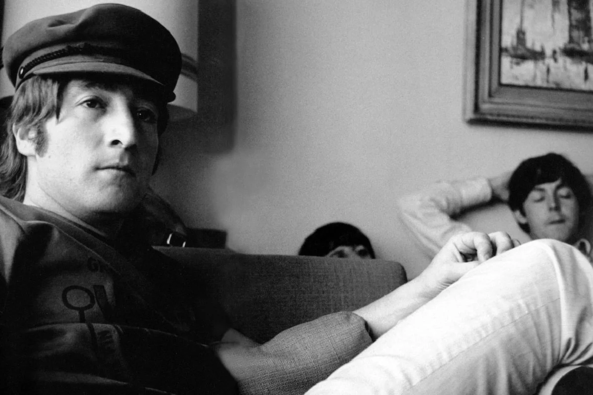

La canción que Paul McCartney tocó más veces en vivo
Fecha: 19 de noviembre de 2023
Leer más...
Paul McCartney cuenta con un extenso repertorio de canciones que fue forjando desde sus
años en The Beatles, su posterior carrera con Wings y luego su etapa solista. A lo largo de los años,
el músico de Liverpool ha lanzado decenas de álbumes, lados B, sencillos y más que le han permitido construir
una trayectoria particularmente prolífica.
En sus shows en vivo, el bajista y compositor despliega un setlist de larga duración en el que suele repasar
grandes hits de The Beatles como "Yesterday", "Hey Jude", "Can't Buy Me Love", "Blackbird" y más. Además,
interpreta otros éxitos de su carrera post Beatles como "Let Me Roll It", "Jet", "Live and Let Die", entre otros.
Sin embargo, hay una canción que supera al resto en relación a la cantidad de veces que la tocó en vivo.
Un track que sonó más de 705 veces
Si bien su carrera con The Beatles fue muy breve, a partir de la década del 70 McCartney se abocó a grandes
giras de presentación de sus álbumes y hasta el día de hoy sigue girando por todo el mundo. En todas estas décadas,
la canción que más veces tocó frente al público fue el clásico "Let It Be", perteneciente al álbum homónimo,
la cual sonó más de 705 veces en vivo.
Ringo Starr y la canción de The Beatles que suena a "grunge de los 60
Fecha: 18 de noviembre de 2023
Leer más...
The Beatles es una de las bandas más icónicas e influyentes de la historia y, para muchos
críticos y especialistas, han sido los impulsores de nuevos géneros musicales. Con una carrera breve pero
prolífica, y en la que demostraron experimentalismo, transformaciones y una redefinición del rock clásico,
la banda de Liverpool continúa su legado hasta la actualidad.
Fue en el proyecto Anthology que Paul McCartney, George Harrison y Ringo Starr se reunieron para repasar
su carrera, publicar canciones inéditas y también versiones de temas ya conocidos que no quedaron en la
obra final. A través de discos y videos, el Anthology revela curiosidades sobre la carrera de The Beatles
y también incluye testimonios de los protagonistas.
En este sentido, Starr habló sobre la canción del White Album que él considera la predecesora del grunge,
género musical surgido a finales de los 80 principalmente en Seattle y que tuvo como pioneros a bandas
como Alice in Chains, Nirvana, Soundgarden y más.
Starr hizo referencia a "Yer Blues", una canción compuesta por John Lennon que, tal como indica el título,
se presenta como un blues con características interpretativas y sonoras que dan un paso más allá de los aspectos
del blues tradicional. "'Yer Blues', no puedes igualarlo. Era este grupo que estaba unido; era como el grunge de
los 60, realmente. Grunge blues", expresó el baterista y compositor en Anthology.
La única canción de The Beatles que tiene un solo de batería de Ringo Starr
Fecha: 16 de noviembre de 2023
Leer más...
No caben dudas de que Ringo Starr fue un componente necesario para que The Beatles llegara
a ser lo que fue, incluso aunque él no se luciera en exceso detrás de la batería, algo que ocurrió, en
parte, porque a él no le gustaba llamar demasiado la atención y realizar solos. De hecho, hay una sola
canción de los Fab Four en la que llevó a cabo uno. El tema en cuestión no es otro que “The End”, el track
que cierra el segundo lado de Abbey Road y que marcó la última ocasión en que los cuatro miembros grabaron
juntos. Cabe recordar que, para la ocasión, los compañeros de banda de Starr ya habían planeado intercambiar
solos, pero fue necesario que ellos y el productor George Martin lo insinuaran para que Ringo ofreciera su
propio aporte en solitario. "Ringo nunca hacía solos de batería", recordó Paul McCartney en el libro The
Complete Beatles Recording Sessions. "Odiaba a los bateristas que hacían largos solos. Todos lo hicimos.
Y cuando se unió a los Beatles, dijimos: 'Ah, ¿qué hay de los solos entonces?', y él respondió: '¡Los odio!'.
Contestamos: ¡Genial! ¡Te amamos!. Por eso nunca los hacía".
“Pero debido a este popurrí, dije: 'Bueno, ¿un solo simbólico?' Él realmente se mantuvo firme y no quiso
hacerlo. Pero después de un poco de suave persuasión, le comenté: 'Sí, haz eso, no sea cosa que Buddy Rich
se vuelva loco', porque creo que eso es lo que él no quería ocasionar", agregó. "Yo hacía la base, y luego
ponía un poco de brillo acá y allá... Si hay un vacío, quiero ser lo suficientemente bueno para llenarlo",
explicó Starr a principios de la década de 2000. "No soy bueno en las cosas técnicas. Soy un músico excéntrico
y básico con rellenos divertidos... porque realmente soy zurdo tocando un kit para diestros. No puedo tocar
la batería por eso".

El disco de The Beatles que para John Lennon "no iba a ninguna parte"
Fecha: 16 de noviembre de 2023
Leer más...
Una vez finalizada su etapa junto a The Beatles, John Lennon nunca se mostró con temor a
criticar su trabajo junto al grupo, incluso cuando se trataba de sus obras más conocidas. Sabido es por
todos que Sgt. Pepper's Lonely Hearts Club Band, uno de los proyectos más destacados de toda la discografía
del cuarteto británico, es considerado como una obra maestra por la gran mayoría de los críticos musicales.
Sin embargo, para Lennon el álbum no “va a ninguna parte”, tal y como él lo aseguró en una entrevista.
Según recuerda Far Out Magazine, Lennon afirmó: “Como leí el otro día, [McCartney] dijo en una de sus
entrevistas en el 'fanzine' que estaba tratando de poner cierta distancia entre los Beatles y el público,
y por eso existía esta identidad del Sgt. Pepper. Intelectualmente, eso es lo mismo que hizo al escribir
'Él te ama' en lugar de 'Te amo'", continuó el oriundo de Liverpool según el libro All We Are Saying:
The Last Major Interview with John Lennon and Yoko Ono. “Esa es simplemente su forma de trabajar. Se llama
a Sgt. Pepper el primer álbum conceptual, pero no va a ninguna parte”.
Llevado adelante por Paul McCartney, el disco mostró a los Fab Four tomando el lugar de un conjunto
ficticio y se convirtió en un clásico del cuarto arte. Sin embargo, Lennon admitió no haberse sentido del
todo cómodo durante su grabación. “Todas mis contribuciones al álbum no tienen absolutamente nada que ver
con esta idea del Sgt. Pepper y su banda. Pero funciona porque dijimos que funcionó, y así fue cómo
apareció el disco”. Finalmente, cerró afirmando: "No fue tan organizado como parece [...] Cualquier otra
canción podría haber estado en cualquier otro álbum”.
Peter Jackson reúne a The Beatles con material inédito en el video de "Now and Then"
Fecha: 3 de noviembre de 2023
Leer más...
The Beatles lanzó el video musical de su última canción “Now and Then”. El clip fue dirigid
o por Peter Jackson, quien se encargó del aclamado documental sobre la banda The Beatles: Get Back.
El audiovisual incluye imágenes de la banda de rock en distintos momentos de su historia y material nunca
antes visto de George Harrison, Paul McCartney y Ringo Starr en 1995 tocando encima del demo original de
John Lennon. En un comunicado de prensa (vía Pitchfork) Jackson habló sobre la dificultad de este proyecto
y dijo: “Un gran video de los Beatles tiene que tener material bueno de los Beatles antes que nada.
No se pueden utilizar actores o CGI. Cada toma de los Beatles tiene que ser genuina”.
“Paul y Ringo me mandaron material de ellos tocando. Apple consiguió más de 14 horas de grabaciones olvidadas
de las sesiones de 1995, incluyendo varias horas de Paul, George y Ringo trabajando en 'Now and Then', y me
lo dieron a mí", agregó Jackson. Y sumó: "Para añadir a esto, algunos preciosos segundos de los Beatles
tocando en sus trajes de cuero, el material más antiguo de los Beatles nunca antes visto, fue donado
gentilmente por Pete Best”.
Posteriormente, Jackson explicó que quería un video sentimental que refleje las varias facetas del grupo: “En
el fondo eran irreverentes y graciosos, y la sección del medio debería capturar ese espíritu. Necesitamos
reírnos de los Beatles, y reírnos con ellos (...) El resultado es bastante loco y le dio al video el balance
requerido entre lo gracioso y lo triste”.
La canción de The Beatles que era "muy difícil de cantar" según George Harrison
Fecha: 27 de octubre de 2023
Leer más...
Si hay algo que definió el sonido de los Beatles a lo largo de sus discos fueron las armonías vocales.
Si bien varias canciones de los Fab Four estaban interpretadas por un solo miembro de la banda, la verdadera
identidad del grupo radicaba en la conjunción de las voces de Paul McCartney, John Lennon y George Harrison.
Aunque lograron perfeccionar su técnica con el paso de los años, una de sus grabaciones fue particularmente difícil
de ejecutar.
Después de grabar las sesiones para lo que sería Let It Be, McCartney logró convencer a sus compañeros de
grabar un álbum de estudio más y juntos realizaron Abbey Road. Descripto por la prensa y los fanáticos
como uno de los mejores discos del cuarteto de Liverpool, contó con algunas de las canciones más
emblemáticas: "Come Together", "Something", "Here Comes the Sun" y "Because".
"Because" destacó del resto por su complejidad vocal. Cuando Lennon estaba ensamblándola, se inspiró en la
música clásica para completar la pieza. Basándose en la famosa composición clásica de "Sonata Claro de
Luna" de Beethoven, Lennon afirmó que la progresión de acordes se originó al tocar esos mismos acordes al
revés. Aunque desde lo instrumental la canción fluía, faltaba algo que enalteciera aun más la composición.
Por ese motivo, y en lugar de quedarse con armonías clásicas, el trío formado por Lennon-McCartney-Harrison
decidió ir más allá e incorporar un coral de voces que fluyera al unísono con la música.
En una ocasión, como recuerda el mencionado medio, Harrison se refirió a la complejidad de la canción y el
esfuerzo que se necesitó para llegar a la toma final. "Creo que esta es posiblemente mi favorita del álbum.
Las letras son muy simples pero la armonía fue muy difícil de cantar. Tuvimos que aprenderla de verdad.
Aunque creo que esa es una de las canciones que más impresionó a la mayoría de la gente. Es realmente buena".